01
Architecture
Notice the details in old facades, traditional doorways and the character of the streets.
Curated Heritage Walks · Pune
Find the stories between the landmarks.
Step into the lanes, meet the stories and discover the everyday details that give a city its character. Sheharnaama invites you to experience old Pune through its architecture, local culture and the people who bring its neighbourhoods to life.
Proposed pilot features — to be confirmed before the first walk.
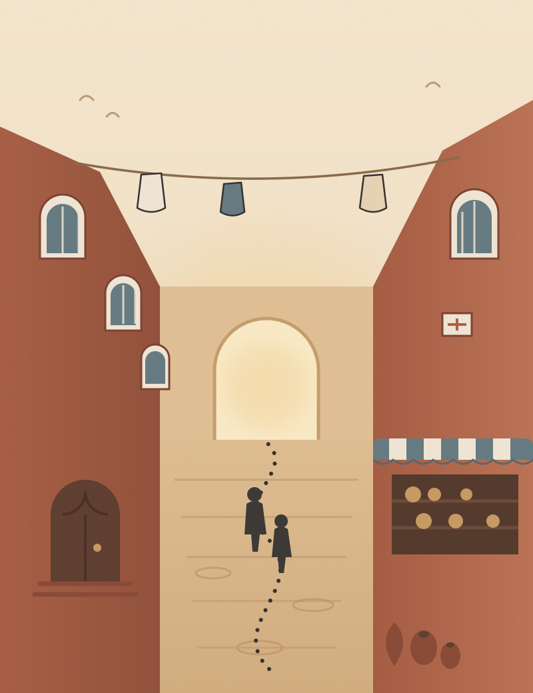
Look Closer
A doorway worn by generations. A craft carried forward by skilled hands. The flavours of a familiar street. The little details that make a neighbourhood feel like home. These are the stories we believe deserve more than a passing glance.
01
Notice the details in old facades, traditional doorways and the character of the streets.
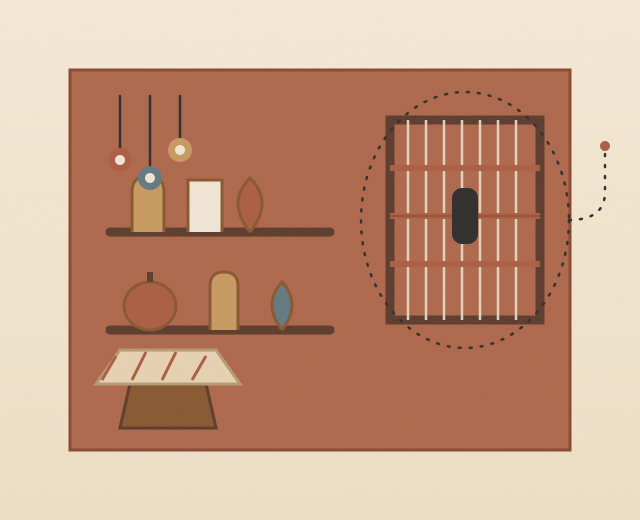
02
Discover the skills, memories and everyday traditions that help shape a neighbourhood. Conversations with local contributors take place only with their consent.
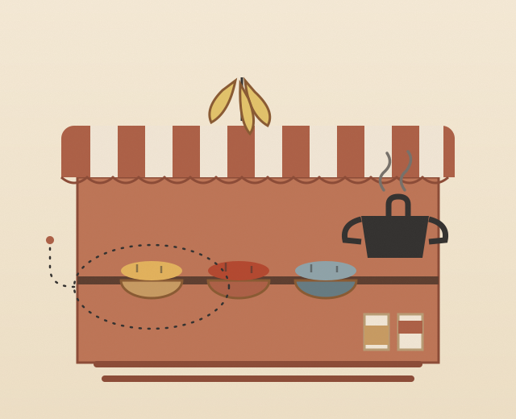
03
Explore the flavours, marketplaces and rituals that give local streets their personality. Tastings are optional and depend on confirmed arrangements.
Your First Chapter
A thoughtfully paced walk through old Pune, guided by stories rather than a checklist. Follow the details of the neighbourhood, discover its layers and collect moments in your own Sheharnaama Story Passport.
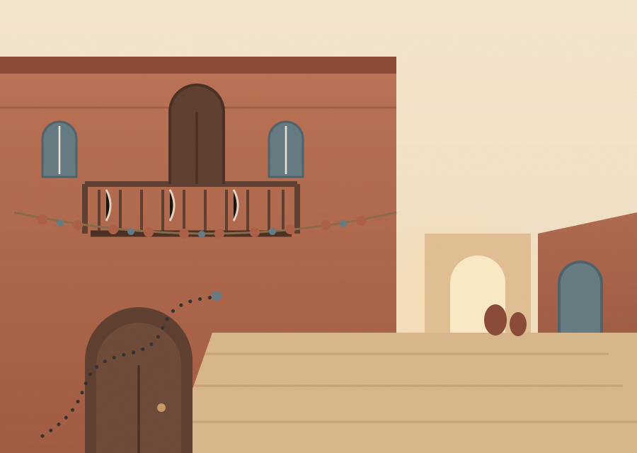
Possible elements along the way
The Sample Route
A sample journey through the textures of old Pune. The actual route, meeting point and activities will be confirmed before the pilot begins.
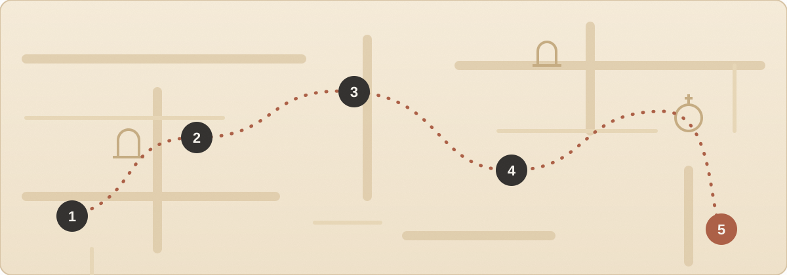
Begin at an agreed public meeting point and receive a short introduction to the neighbourhood.
Look beyond the obvious and notice the doors, facades, lanes and details that reveal a place’s character.
Explore local life and, where appropriate and with permission, learn from the people who contribute to the neighbourhood.
Make space for a local flavour or craft moment when available and included in the confirmed experience.
Close the walk by revisiting your favourite discoveries in the Sheharnaama Story Passport.
How It Works
01
Explore the proposed experience and register your interest.
02
Receive confirmed meeting details and practical information before the walk.
03
Move at a thoughtful pace, notice local details and discover stories along the way.
04
Use your Story Passport to collect highlights and revisit the places and stories that mattered to you.
Upcoming Walks
Proposed dates for the Peth Stories Walk, published by our team as details are verified. Registering interest does not confirm a booking — final details are always communicated separately.
Loading upcoming walks…
Group capacity describes the proposed maximum group size — it is not a count of remaining seats, and no payment is taken at this stage.
The Sheharnaama Story Passport
Your journey deserves more than a photograph. The Story Passport is a journal‑inspired keepsake designed to help you remember the details, discoveries and moments that made your walk personal.
Mark the moments and stops that made an impression.
Keep a word, a sketch or a detail worth remembering.
Each stop connects to a 30-minute immersive audio story, maker dialogue, and architectural field guide. Explore Stop 03 demo →
Concept mockup of the keepsake — the physical design will evolve.
Why Sheharnaama
Because the stories between the landmarks deserve to be discovered, too.
Who It Is For
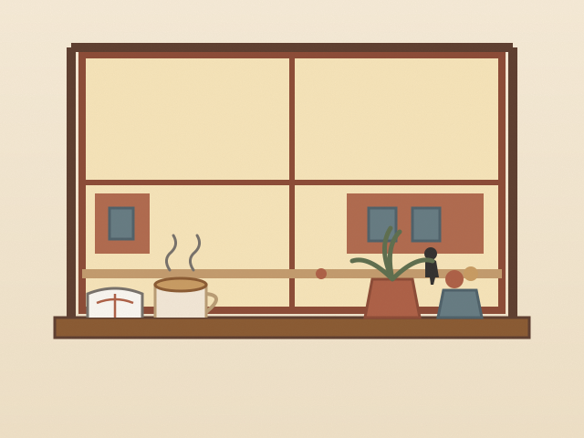
For Pune residents ready to see familiar streets differently.
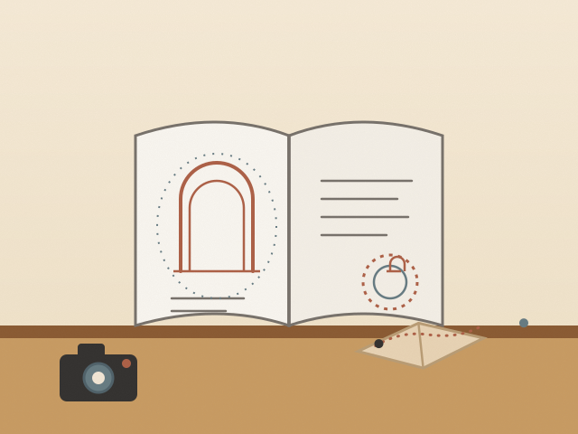
For visitors who want to go beyond a conventional sightseeing itinerary.
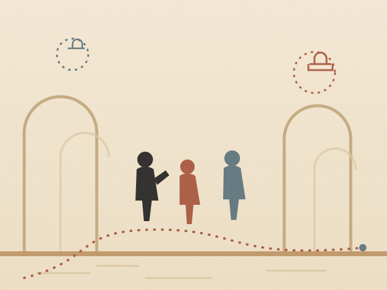
For friends, college groups and private groups looking for a meaningful way to explore a neighbourhood.
Group formats and private outings will be planned on request once the pilot is confirmed.
The Campaign
Some of a city’s most memorable stories are not displayed on plaques. They live in small details, everyday rituals, familiar shops and the people who give a place its character.
#WhatLiesBetween
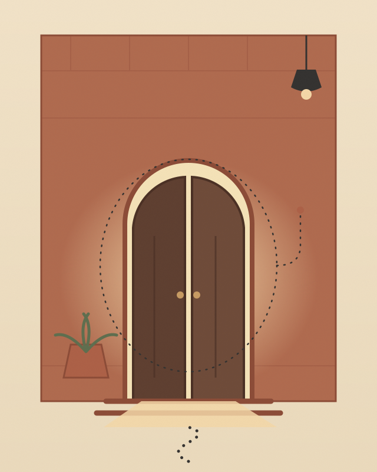
Card A
Every threshold has a story worth noticing.
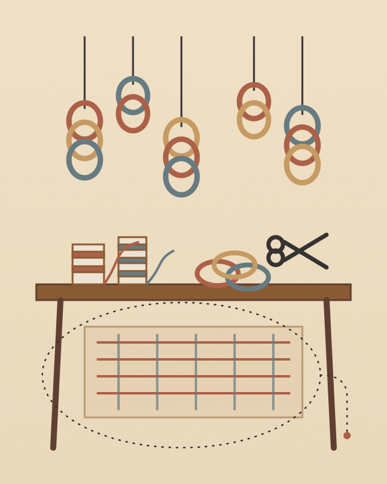
Card B
Tradition survives through the people who practise it.
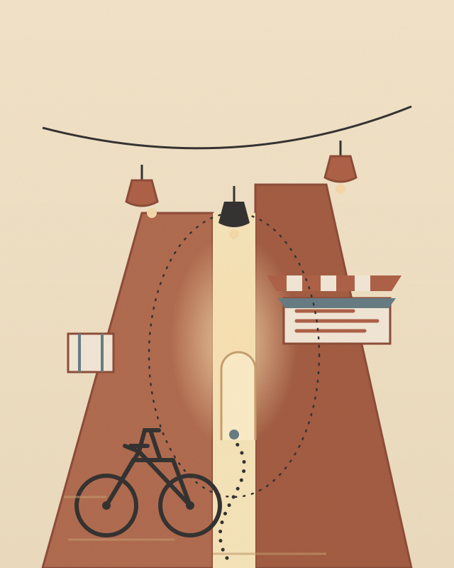
Card C
Look beyond the destination. Discover what happens in between.
A public campaign page will follow once the pilot is announced.
Gallery
Illustrated impressions of the textures a walk hopes to notice — doorways, lanes, crafts and the keepsake that ties them together.
Illustrative artwork in the brand’s visual language — not photographs of completed walks.
Be Part of the First Chapter
We are shaping our first Sheharnaama walk. Share your interest to help us understand the preferred dates, group size and experience format.
This prototype records expressions of interest in a local demonstration database. It is not a booking system: no payment is taken and no tour is confirmed. Submitting requires the site to be served by the Sheharnaama backend.
Questions
Sheharnaama is a proposed heritage‑walking experience built around the architecture, people and everyday stories of a neighbourhood.
The initial concept focuses on old Pune’s Peth neighbourhoods. Exact route and meeting‑point details will be confirmed before a walk is offered.
The proposed pilot duration is approximately 90–120 minutes. The final duration will depend on the confirmed route.
The proposed format is 8–12 guests, designed to support a more personal experience.
Any tasting or food‑related experience will be stated explicitly in the confirmed walk details. It should not be assumed to be included.
Complete the interest form on this page. Submitting the current prototype form is not a confirmed booking.
Accessibility details will be provided once the route is finalised. Please share any specific access requirements in the registration notes.
Any confirmed booking will include a clearly communicated cancellation and rescheduling policy. Details will be published before bookings open.
Take the slower road. Notice the details. Find the stories between the landmarks.